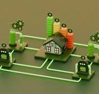
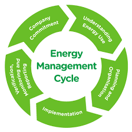

DATA EXPLORATION🎓
ENERGY MANAGEMENT
Energy management refers to the process of monitoring, controlling, and optimizing energy use within a system or organization to reduce energy consumption, improve efficiency, and minimize costs, while also contributing to environmental sustainability. Effective energy management is crucial in both industrial and residential settings, helping to reduce energy waste and support sustainable practices.

Key Objectives of Energy Management:
Energy Efficiency: Maximize energy output while minimizing the energy input or consumption. This often involves improving systems and equipment to reduce energy losses.
Cost Reduction: Lowering energy costs through better management practices, efficient equipment, and strategic use of energy.
Sustainability: Reducing the environmental impact of energy use by minimizing carbon emissions and supporting renewable energy sources.
Compliance: Meeting energy-related regulations and standards, especially regarding emissions and energy consumption, which vary by region and industry.
Reliability and Security: Ensuring a steady and reliable energy supply while preventing energy shortages or disruptions.

Key Components of Energy Management:
1.Energy Monitoring and Measurement:
The first step in managing energy is to measure and monitor energy consumption regularly. This includes using smart meters, sensors, and software systems to track energy use in real time.
Data is collected on energy usage patterns, costs, and inefficiencies to identify areas for improvement.
2.Energy Audits:
Energy audits are conducted to assess how energy is used within a building, facility, or operation. Audits identify areas where energy is wasted or where improvements can be made.
This process often results in the development of an Energy Management Plan that outlines recommended changes to reduce energy consumption.
3.Energy Efficiency Measures:
Improving equipment: Replacing old or inefficient equipment, like switching to LED lighting or energy-efficient appliances.
Optimizing systems: Optimizing heating, ventilation, and air conditioning (HVAC) systems, industrial processes, or machinery for better performance with less energy.
Building improvements: Insulating buildings, upgrading windows, and improving the thermal envelope of a structure to reduce heating and cooling costs.
Behavioral changes: Educating employees or residents about reducing energy waste, like turning off lights and equipment when not in use.
4.Renewable Energy Integration:
Incorporating renewable energy sources like solar, wind, or geothermal into the energy mix can significantly reduce dependence on non-renewable energy and lower carbon footprints.
Many companies and homes are installing solar panels, wind turbines, or using biomass or hydropower to generate their own electricity.
5.Energy Storage Solutions:
To ensure a consistent energy supply, energy management can include the use of batteries or other energy storage systems to store energy during periods of low demand for use during peak times.
Energy storage helps to balance supply and demand, especially in systems that integrate renewable energy, which may not always be available.
6.Demand Response Programs:
These programs are designed to encourage energy users to reduce or shift their electricity usage during peak periods when demand is high.
For example, industries may temporarily shut down non-essential operations or adjust energy usage in response to grid signals, helping avoid energy shortages or blackouts.
Energy Management Systems (EMS):
An Energy Management System (EMS) is a comprehensive set of tools and processes used to monitor, control, and optimize energy use in real time. It typically includes:
*Software tools for data collection, analysis, and reporting.
*Automation systems for controlling equipment such as HVAC systems, lighting, and machinery to optimize energy use.
*Energy dashboards that provide insights into real-time energy consumption, cost, and efficiency metrics.